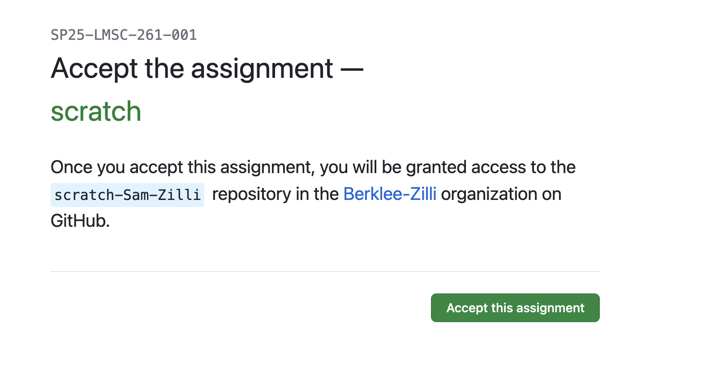
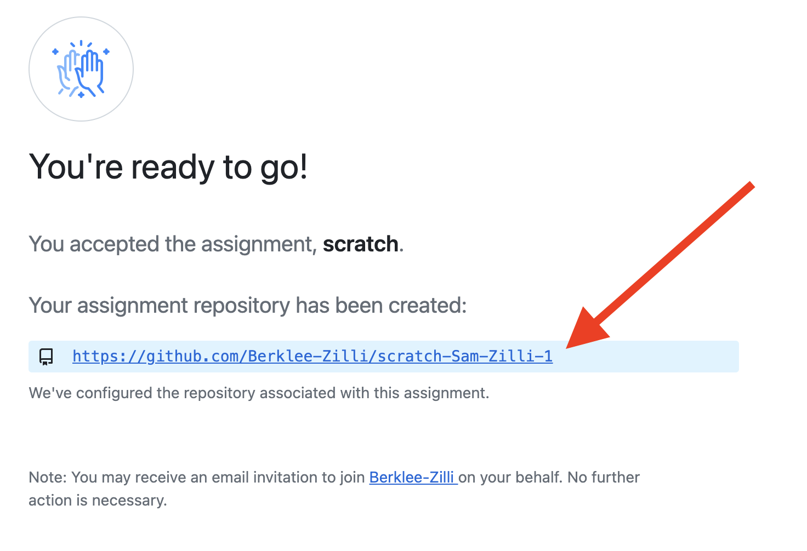
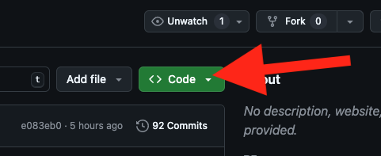
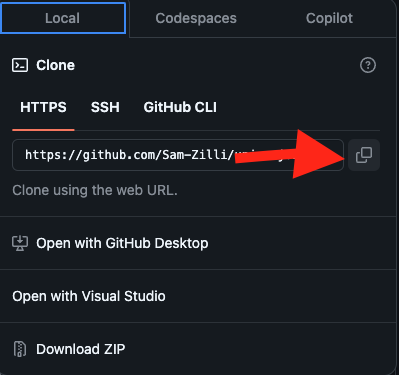

Step 1: Before we begin, we need a repo to practice with.
Good news, I made you one! Follow this link!
- Accept the assignment

- Click the link to go to your repository

- Copy the link for the repo by clicking on the big green 'Code' button

- Click to copy the link to your clipboard

Step 2: Clone a repo from Github.com to your computer
Start by opening your terminal and running the following command to clone (make a copy of) the repo on your computer:
- Open your terminal
- Navigate to the directory you want to clone this repo to (maybe your Intro-To-Programming folder?)
- Run this command:
% git clone <theLinkYouCopiedInStep0>
Step 3: Let's make sure that worked.
- Run the command that tells you what contents are in the directory you are in. Does the repo exist now?
- Change directories into the repo.
- Now that you're inside the repo cloned on your computer, what does it contain?
- Notice that the ls command shows you the contents, but ls -a shows you even the HIDDEN content.
- You can check if you are in inside a github repository by running ls -a and seeing if there's a .git file
You've successfully cloned code from Github onto your computer. You could use this exact method to get TONS of open-source software online!
The password is IGOTGIT